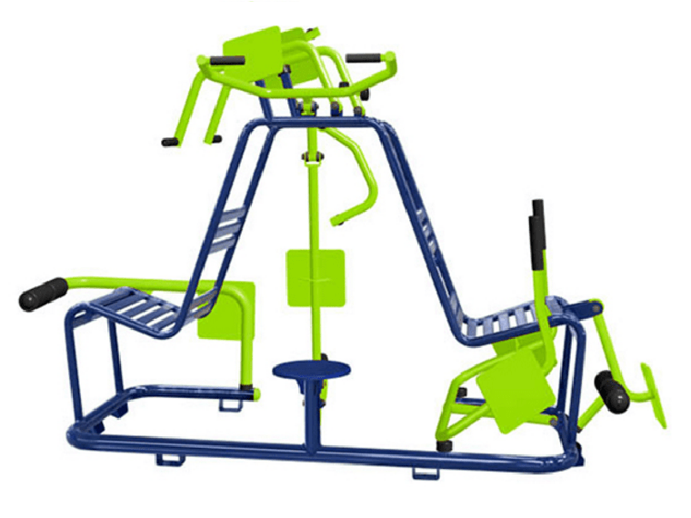

Multi Exercitador
Trabalha o quadríceps e extensão de joelho. Existem três variações que, segundo Vinicius, são complementares ao exercício. Quanto mais aberto estiver o ângulo dos pés, mais a parte de dentro da coxa é trabalhada. Quanto mais fechado o ângulo, mais a parte de fora da coxa é exercitada. Se o pé estiver na posição padrão, de 90º, o efeito é para o quadríceps inteiro.